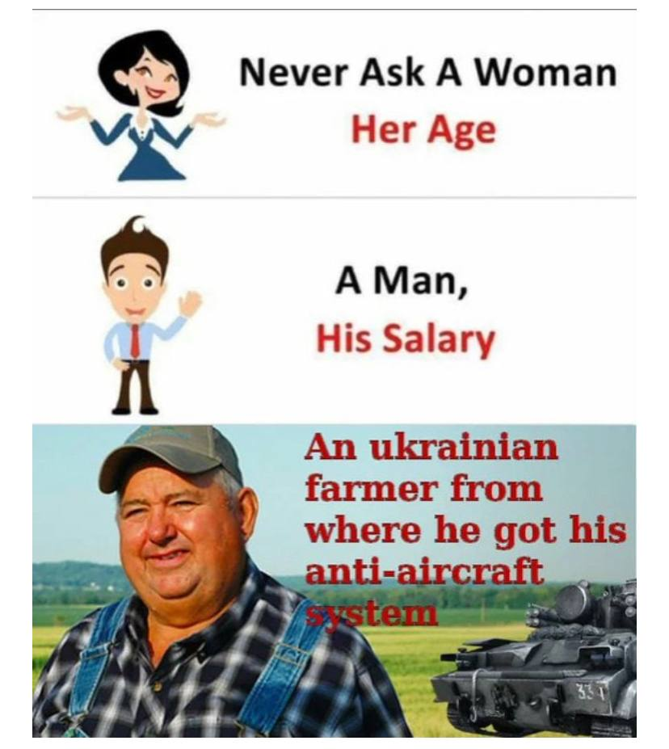

Так чому саме паляниця?
Є дві речі, які суттєво впливають на вибір саме цього слова "паляниця":
- по-перше, ворог не знає що таке паляниця та не вміє це слово вимовляти;
- по-друге, навіть якщо ворог навчився вимовляти це слово, ми в нього запитаємо чим відрізняється "паляниця" від "полуниці" та "поляниці".
Поки ворог вчиться вимовляти "паляницю", ми з вами пограємо в гру "що такє поляниця"
.jpg)
Поляниця це:
- різновид хлібу;
- село в Івано-Франківській області;
- ягода;
ПРАВИЛЬНО! СПРАВЖНІ УКРАЇНЦІ ЗНАЮТЬ, ЩО ПОЛЯНИЦЯ ЦЕ СЕЛО В ІВАНО-ФРАНКІВСЬКІЙ ОБЛАСТІ.
Можливо вам цікаво знати, що думає русня про паляницю?
Ми знайшли цікаву сторінку в інтернеті, дивіться самі.
Так, в російській мові є також слово "паляница", але з початком повномасштабного вторгнення росії в Україну жителі мордору почали цікавитися що ж таке паляница в своїх чатах. Як завжди, навіть прочитавши текст, вони незрозуміли що значить "паляница". В коментарях одна дівчина розповіла що це значить, а значить це жінка-воїн. (посилання)
Дуже дивно, що їхній чат чистять дуже старанно, бо поки я робила цю статтю вони видалили грубі коментарі(що ніяк не схоже на них). Було цікаво, що дівчина в коментарях відповіла правильно на питання хто така паляниця. На що їй справжній руський чоловік відповів - Дура! Нажаль, ми вже не побачимо з вами цей коментар( Але ви можете вірити мені на слово).
Декілька пояснень щодо довіри)
p.s.це жарт) звісно, мені можно довіряти!
Ми бачимо як сильно ми відрізняємось від нашого ворога! Ми з вами:
ввічливі
добрі
справжні
веселі
Ми навіть по-різному ставимося до праці. Ось, наприклад, як ставиться до праці Віталій Кім та ослик. .jpg)
А це як працюють наші фермери:
А це я треную здивований вигляд до дня, коли росія розвалиться:)
Це все звісно жарти, але ми мусимо зараз мати настрій та йти вперед! Наша країна має бути та наші громадяни мають бути щасливими!! Від Заходу до Сходу я всіх закликаю!!! : КОХАЙТЕСЯ Ж, ЧОРНОБРИВІ, ДА НЕ З МОСКАЛЯМИ)
.jpg)